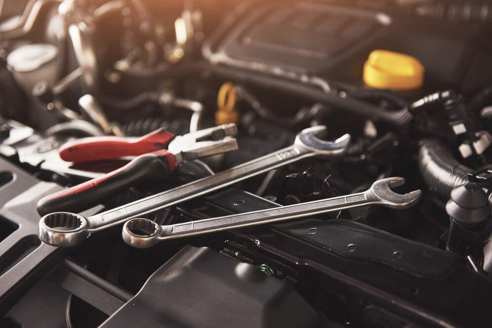
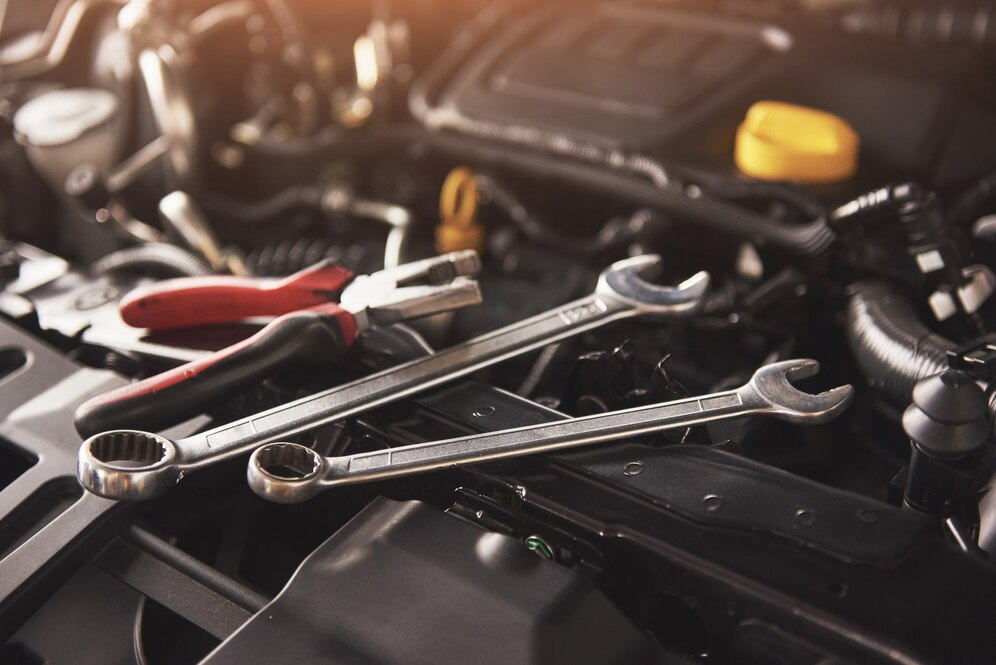

We fix it right the first time, every time
Ready to DIY? it's important to note that not all repairs or maintenance tasks attempted by inexperienced individuals, as some may require specialized knowledge or tools.
Here are some general steps to help you get started with DIY car maintenance.
Research and gather information: Before attempting any DIY repairs, it's crucial to thoroughly research the task at hand.
Look for reliable sources such as vehicle repair manuals, online forums, or instructional videos specific to your car make and model.
Gather the necessary tools: Make sure you have the right tools for the job.
Common tools for basic car repairs include a socket set, wrenches, pliers, screwdrivers, and a jack and jack stands for lifting the vehicle.
Start with basic maintenance tasks: Begin with simple maintenance tasks like changing the oil and oil filter, replacing air filters, checking and maintaining fluid levels (coolant, brake fluid, transmission fluid, etc.), and replacing windshield wipers.
These have straightforward instructions and can be done with minimum risk. Learn to diagnose common issues: Understanding how car problems can save you time and money.
Research symptoms and possible causes, use diagnostic tools like an OBD-II scanner to retrieve error codes, and consult reliable sources for troubleshooting steps.
Take safety precautions: When working on your car, prioritize safety. Use proper lifting techniques, wear protective gear like gloves and safety glasses, and work in a well-ventilated area. Disconnect the battery before working avoid electrical shocks.
Start small and gain experience: As you gain confidence and experience, you can gradually attempt more complex repairs or maintenance tasks. However, remember to be realistic about your abilities and limitations.
If a repair seems too complicated or requires specialized tools, it may be best to seek professional help.
Join or forums: Engaging with experienced DIY enthusiasts and mechanics through online communities or forums can provide valuable guidance and support.
You can ask for advice, share your experiences, from others who have tackled similar projects.
Remember, DIY car maintenance and repairs have. Some tasks are better especially those involving complex systems like the transmission or advanced electronic components. If you're unsure or uncomfortable, it's always recommended to consult a qualified mechanic to avoid causing further damage or safety